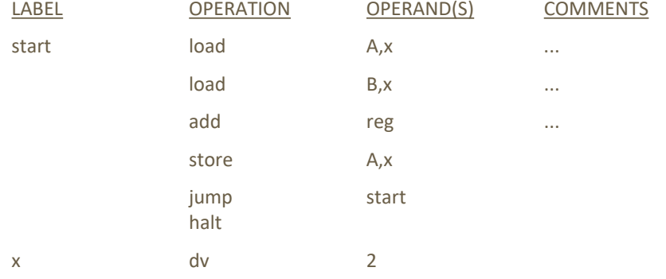
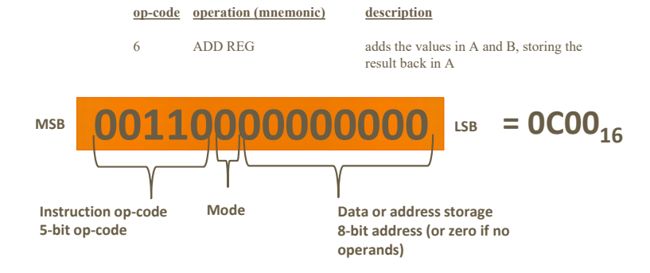
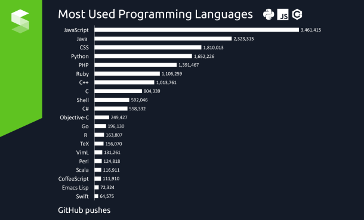

Generally programming languages can be divided into three categrories as follows:
High level language
High level language like C, C++, Java, PHP and so on. High level languages are designed to be used by programmers to give instructions.
These languages require translation as the computer can't directly follow a high level language. This translation is
done by the compiler or interpreter.
Assembly language
An assembly language is a low level programming language. Assembly language is used for processors and other programmable devices.
Assembly language is also known as assembly code.
Machine Language
Machine language is a collection of binary digits. This is the language that computer understands.
Every program must be translated into this list of 0's and 1's in order to get the program to function.
High level language

Assembly language

Machine language
Most used languages

Most used languages
The above diagram describes the most used high level programming languages. The use is calculated in times and lines that are pushed into GitHub version control.
This gives quite accurate idea of the share that each language is used currently.
Comparing the most popular programming language is still little tricky and different methods of research give different results. For example in the table below
the research was done examining google and other search engine searches.